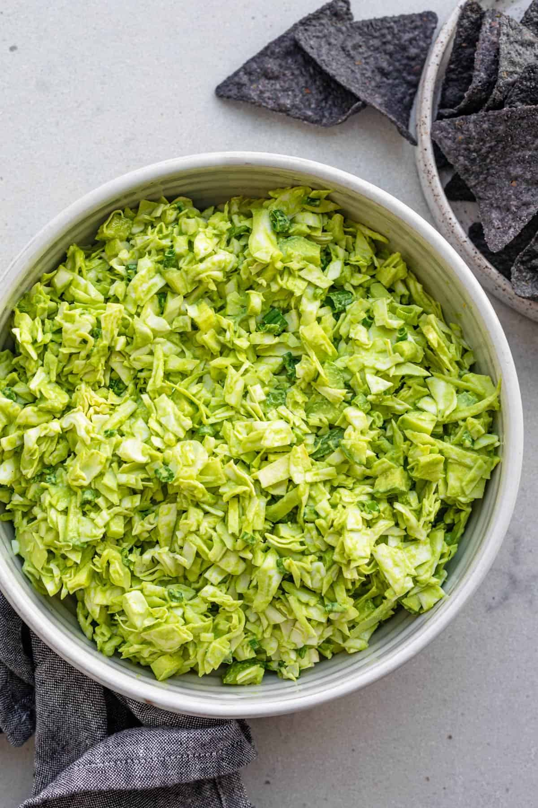

Goddess Salad

Healthy and Green Goddess Salad
This salad is the perfect salad for pesto lovers. It pairs very well with some hearty soup and chili on the side!
Ingredients
Salad Base
- 3 heads of romaine lettuce
- 3-4 cucumbers, finely diced
- 1-4 cup chives, finely diced
- 1 bundle green onion or scallions
Green Goddess Dressing
- juice of 2 lemons
- 1/4 cup olive oil
- 2T rice vinegar
- 2 cloves garlic
- 1 small shallot
- 1/4 cup cashews or walnuts
- 1 cup fresh torn basil leaves
- 1 cup fresh spinach
- 1/3 cup nutritional yeast
- 1 tsp salt
Steps
- Place all salad ingredients in a big bowl.
- Add all liquid dressing ingredients to a blender, then add the dry ingredients and blend until smooth.
- Combine dressing over the salad and mix well.